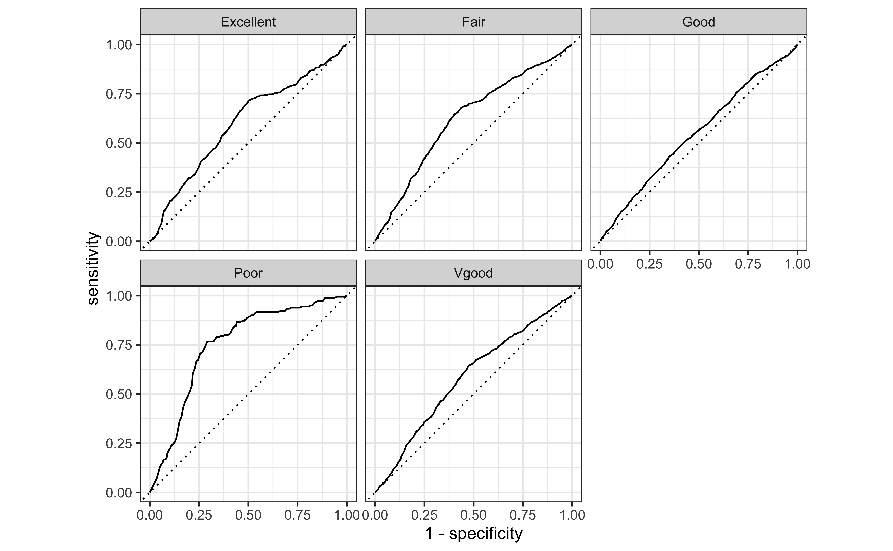

Multinomial logistic regression
Prediction + inference
Nov 27, 2023
Announcements
Due dates
- HW 05 due Wed, Nov 29 at 11:59pm
Project
- (Optional) Round 1 submission due Fri, Dec 01 at 11:59pm
- Presentations in lab Dec 5 & 7
Exam 02 dates
- In-class: Mon, Dec 4
- Take-home: Mon, Dec 4 - Wed, Dec 6
- Review: Wed, Nov 29
Click here to access lecture recordings. Available until Mon, Dec 04 at 9am
Statistician of the day: Mike Dairyko
Mike Dairyko was a student at Pomona College where a linear algebra class set him on a career path centered around mathematics. Through that class he found his way to two different summer REU programs and eventually to a PhD in Applied Mathematics from Iowa State University (2018). While initially believing that he would stay in academia after his graduate work, being introduced to machine learning methods caused him to pursue data science jobs after graduation.
Dr. Dairyko served as a Senior Manager of Data Science at the Milwaukee Brewers and is now the Director of Ticketing Analytics at the Milwaukee Bucks. Helping the organization get the most out of budgeting, revenue, and ticket sales allows him to fully use his training in mathematics and data science.

Statistician of the day
About his role as a Senior Manager of Data Science for the Milkwaukee Brewers:
“During the season, one of my main priorities is to produce game-by-game ticket and revenue projections. To do so, my group incorporates historical data—such as team performance, weather, and schedules—into multiple regression-based models and then consolidates the outputs in an easily-digestible format. A large codebase both automates and maintains this process; the codebase is regularly tweaked to ensure that it is agile enough to handle the constant usage and flow of new information.”
“Our projections are most accurate when we utilize both qualitative and quantitative forecasts.”
Statistician of the day
About his role as a Senior Manager of Data Science for the Milkwaukee Brewers:
“Mathematicians are ultimately trained to develop problem-solving skills and apply them with persistence and creativity…Carefully reviewing the work—and perhaps redoing it a different way or approaching the issue from another angle—eventually leads to success…I do use the problem-solving strategies, persistence, and creativity that I have honed throughout my mathematical journey every single day.”
“I would encourage students to become comfortable with navigating a programming language such as R or Python…Briefly stepping outside of mathematics and establishing computer science and statistics expertise is also useful…Finally, participating in conferences with data science content is an excellent way to gain exposure to more advanced topics in the field and build a network within the community.”
Topics
- Predictions
- Model selection
- Checking conditions
Computational setup
NHANES Data
- National Health and Nutrition Examination Survey is conducted by the National Center for Health Statistics (NCHS).
- The goal is to “assess the health and nutritional status of adults and children in the United States”.
- This survey includes an interview and a physical examination.
Variables
Goal: Use a person’s age and whether they do regular physical activity to predict their self-reported health rating.
Outcome:
HealthGen: Self-reported rating of participant’s health in general. Excellent, Vgood, Good, Fair, or Poor.Predictors:
Age: Age at time of screening (in years). Participants 80 or older were recorded as 80.PhysActive: Participant does moderate to vigorous-intensity sports, fitness or recreational activities.
The data
Rows: 6,465
Columns: 5
$ HealthGen <fct> Good, Good, Good, Good, Vgood, Vgood, Vgood, Vgood, Vgood, …
$ Age <int> 34, 34, 34, 49, 45, 45, 45, 66, 58, 54, 50, 33, 60, 56, 56,…
$ PhysActive <fct> No, No, No, No, Yes, Yes, Yes, Yes, Yes, Yes, Yes, No, No, …
$ Education <fct> High School, High School, High School, Some College, Colleg…
$ obs_num <int> 1, 2, 3, 4, 5, 6, 7, 8, 9, 10, 11, 12, 13, 14, 15, 16, 17, …Model in R
Model summary
| y.level | term | estimate | std.error | statistic | p.value |
|---|---|---|---|---|---|
| Vgood | (Intercept) | 1.265 | 0.154 | 8.235 | 0.000 |
| Vgood | Age | 0.000 | 0.003 | -0.014 | 0.989 |
| Vgood | PhysActiveYes | -0.332 | 0.095 | -3.496 | 0.000 |
| Good | (Intercept) | 1.989 | 0.150 | 13.285 | 0.000 |
| Good | Age | -0.003 | 0.003 | -1.187 | 0.235 |
| Good | PhysActiveYes | -1.011 | 0.092 | -10.979 | 0.000 |
| Fair | (Intercept) | 1.033 | 0.174 | 5.938 | 0.000 |
| Fair | Age | 0.001 | 0.003 | 0.373 | 0.709 |
| Fair | PhysActiveYes | -1.662 | 0.109 | -15.190 | 0.000 |
| Poor | (Intercept) | -1.338 | 0.299 | -4.475 | 0.000 |
| Poor | Age | 0.019 | 0.005 | 3.827 | 0.000 |
| Poor | PhysActiveYes | -2.670 | 0.236 | -11.308 | 0.000 |
Predictions
Calculating probabilities
For categories \(2,\ldots,K\), the probability that the \(i^{th}\) observation is in the \(j^{th}\) category is
\[ \hat{\pi}_{ij} = \frac{\exp\{\hat{\beta}_{0j} + \hat{\beta}_{1j}x_{i1} + \dots + \hat{\beta}_{pj}x_{ip}\}}{1 + \sum\limits_{k=2}^K \exp\{\hat{\beta}_{0k} + \hat{\beta}_{1k}x_{i1} + \dots \hat{\beta}_{pk}x_{ip}\}} \]
For the baseline category, \(k=1\), we calculate the probability \(\hat{\pi}_{i1}\) as
\[ \hat{\pi}_{i1} = 1- \sum\limits_{k=2}^K \hat{\pi}_{ik} \]
Predicted health rating
We can use our model to predict a person’s perceived health rating given their age and whether they exercise.
# A tibble: 6,465 × 11
.pred_class .pred_Excellent .pred_Vgood .pred_Good .pred_Fair .pred_Poor
<fct> <dbl> <dbl> <dbl> <dbl> <dbl>
1 Good 0.0687 0.243 0.453 0.201 0.0348
2 Good 0.0687 0.243 0.453 0.201 0.0348
3 Good 0.0687 0.243 0.453 0.201 0.0348
4 Good 0.0691 0.244 0.435 0.205 0.0467
5 Vgood 0.155 0.393 0.359 0.0868 0.00671
6 Vgood 0.155 0.393 0.359 0.0868 0.00671
7 Vgood 0.155 0.393 0.359 0.0868 0.00671
8 Vgood 0.157 0.400 0.342 0.0904 0.0102
9 Vgood 0.156 0.397 0.349 0.0890 0.00872
10 Vgood 0.156 0.396 0.352 0.0883 0.00804
# ℹ 6,455 more rows
# ℹ 5 more variables: HealthGen <fct>, Age <int>, PhysActive <fct>,
# Education <fct>, obs_num <int>Actual vs. predicted health rating
For each observation, the predicted perceived health rating is the category with the highest predicted probability.
# A tibble: 6,465 × 6
.pred_class .pred_Excellent .pred_Vgood .pred_Good .pred_Fair .pred_Poor
<fct> <dbl> <dbl> <dbl> <dbl> <dbl>
1 Good 0.0687 0.243 0.453 0.201 0.0348
2 Good 0.0687 0.243 0.453 0.201 0.0348
3 Good 0.0687 0.243 0.453 0.201 0.0348
4 Good 0.0691 0.244 0.435 0.205 0.0467
5 Vgood 0.155 0.393 0.359 0.0868 0.00671
6 Vgood 0.155 0.393 0.359 0.0868 0.00671
7 Vgood 0.155 0.393 0.359 0.0868 0.00671
8 Vgood 0.157 0.400 0.342 0.0904 0.0102
9 Vgood 0.156 0.397 0.349 0.0890 0.00872
10 Vgood 0.156 0.396 0.352 0.0883 0.00804
# ℹ 6,455 more rowsConfusion matrix
health_conf <- health_aug |>
count(HealthGen, .pred_class, .drop = FALSE) |>
pivot_wider(names_from = .pred_class, values_from = n)
health_conf# A tibble: 5 × 6
HealthGen Excellent Vgood Good Fair Poor
<fct> <int> <int> <int> <int> <int>
1 Excellent 0 528 210 0 0
2 Vgood 0 1341 743 0 0
3 Good 0 1226 1316 0 0
4 Fair 0 296 625 0 0
5 Poor 0 24 156 0 0Actual vs. predicted health rating
Why do you think no observations were predicted to have a rating of “Excellent”, “Fair”, or “Poor”?


ROC curves
ROC curves for multiclass outcomes use a one-vs-all approach: calculate multiple curves, one per level vs. all other levels.
ROC curves
ROC curve: under the hood
An additional column, .level, identifies the "one" column in the one-vs-all calculation:
# A tibble: 620 × 4
.level .threshold specificity sensitivity
<chr> <dbl> <dbl> <dbl>
1 Excellent -Inf 0 1
2 Excellent 0.0681 0 1
3 Excellent 0.0682 0.00664 0.997
4 Excellent 0.0682 0.0138 0.992
5 Excellent 0.0683 0.0192 0.989
6 Excellent 0.0683 0.0243 0.981
7 Excellent 0.0684 0.0297 0.970
8 Excellent 0.0684 0.0353 0.969
9 Excellent 0.0684 0.0426 0.951
10 Excellent 0.0685 0.0492 0.947
# ℹ 610 more rowsModel selection for inference
Comparing nested models
- Suppose there are two models:
- Reduced model includes predictors \(x_1, \ldots, x_q\)
- Full model includes predictors \(x_1, \ldots, x_q, x_{q+1}, \ldots, x_p\)
- We want to test the following hypotheses:
- \(H_0: \beta_{q+1} = \dots = \beta_p = 0\)
- \(H_A: \text{ at least 1 }\beta_j \text{ is not } 0\)
- To do so, we will use the drop-in-deviance test (very similar to logistic regression)
Add Education to the model?
- We consider adding the participants’
Educationlevel to the model.- Education takes values
8thGrade,9-11thGrade,HighSchool,SomeCollege, andCollegeGrad
- Education takes values
- Models we’re testing:
- Reduced model:
Age,PhysActive - Full model:
Age,PhysActive,Education
- Reduced model:
\[ \begin{align} &H_0: \beta_{9-11thGrade} = \beta_{HighSchool} = \beta_{SomeCollege} = \beta_{CollegeGrad} = 0\\ &H_a: \text{ at least one }\beta_j \text{ is not equal to }0 \end{align} \]
Add Education to the model?
Add Education to the model?
| Model | Resid. df | Resid. Dev | Test | Df | LR stat. | Pr(Chi) |
|---|---|---|---|---|---|---|
| Age + PhysActive | 25848 | 16994.23 | NA | NA | NA | |
| Age + PhysActive + Education | 25832 | 16505.10 | 1 vs 2 | 16 | 489.132 | 0 |
At least one coefficient associated with Education is non-zero. Therefore, we will include Education in the model.
Model with Education
# A tibble: 28 × 8
y.level term estimate std.error statistic p.value conf.low conf.high
<chr> <chr> <dbl> <dbl> <dbl> <dbl> <dbl> <dbl>
1 Vgood (Intercept) 5.82e-1 0.301 1.93 5.36e- 2 -0.00914 1.17
2 Vgood Age 1.12e-3 0.00266 0.419 6.75e- 1 -0.00411 0.00634
3 Vgood PhysActiveY… -2.64e-1 0.0985 -2.68 7.33e- 3 -0.457 -0.0711
4 Vgood Education9 … 7.68e-1 0.308 2.49 1.27e- 2 0.164 1.37
5 Vgood EducationHi… 7.01e-1 0.280 2.51 1.21e- 2 0.153 1.25
6 Vgood EducationSo… 7.88e-1 0.271 2.90 3.71e- 3 0.256 1.32
7 Vgood EducationCo… 4.08e-1 0.268 1.52 1.28e- 1 -0.117 0.933
8 Good (Intercept) 2.04e+0 0.272 7.51 5.77e-14 1.51 2.57
9 Good Age -1.72e-3 0.00263 -0.651 5.15e- 1 -0.00688 0.00345
10 Good PhysActiveY… -7.58e-1 0.0961 -7.88 3.16e-15 -0.946 -0.569
11 Good Education9 … 3.60e-1 0.275 1.31 1.90e- 1 -0.179 0.899
12 Good EducationHi… 8.52e-2 0.247 0.345 7.30e- 1 -0.399 0.569
13 Good EducationSo… -1.13e-2 0.239 -0.0472 9.62e- 1 -0.480 0.457
14 Good EducationCo… -8.91e-1 0.236 -3.77 1.65e- 4 -1.35 -0.427
15 Fair (Intercept) 2.12e+0 0.288 7.35 1.91e-13 1.55 2.68
16 Fair Age 3.35e-4 0.00312 0.107 9.14e- 1 -0.00578 0.00645
17 Fair PhysActiveY… -1.19e+0 0.115 -10.4 3.50e-25 -1.42 -0.966
18 Fair Education9 … -2.24e-1 0.279 -0.802 4.22e- 1 -0.771 0.323
19 Fair EducationHi… -8.32e-1 0.252 -3.31 9.44e- 4 -1.33 -0.339
20 Fair EducationSo… -1.34e+0 0.246 -5.46 4.71e- 8 -1.82 -0.861
21 Fair EducationCo… -2.51e+0 0.253 -9.91 3.67e-23 -3.00 -2.01
22 Poor (Intercept) -2.00e-1 0.411 -0.488 6.26e- 1 -1.01 0.605
23 Poor Age 1.79e-2 0.00509 3.53 4.21e- 4 0.00797 0.0279
24 Poor PhysActiveY… -2.27e+0 0.242 -9.38 6.81e-21 -2.74 -1.79
25 Poor Education9 … -3.60e-1 0.353 -1.02 3.08e- 1 -1.05 0.332
26 Poor EducationHi… -1.15e+0 0.334 -3.44 5.86e- 4 -1.81 -0.494
27 Poor EducationSo… -1.07e+0 0.316 -3.40 6.77e- 4 -1.69 -0.454
28 Poor EducationCo… -2.32e+0 0.366 -6.34 2.27e-10 -3.04 -1.60 Compare models using AIC & BIC
AIC
Reduced model:
Full model:
Checking conditions for inference
Conditions for inference
We want to check the following conditions for inference for the multinomial logistic regression model:
Linearity: Is there a linear relationship between the log-odds and the predictor variables?
Randomness: Was the sample randomly selected? Or can we reasonably treat it as random?
Independence: Are the observations independent?
Checking linearity
Similar to logistic regression, we will check linearity by examining empirical logit plots between each level of the response and the quantitative predictor variables.
nhanes_adult <- nhanes_adult |>
mutate(
Excellent = factor(if_else(HealthGen == "Excellent", "1", "0")),
Vgood = factor(if_else(HealthGen == "Vgood", "1", "0")),
Good = factor(if_else(HealthGen == "Good", "1", "0")),
Fair = factor(if_else(HealthGen == "Fair", "1", "0")),
Poor = factor(if_else(HealthGen == "Poor", "1", "0"))
)Checking linearity


Checking linearity


Checking linearity

✅ The linearity condition is satisfied. There is generally a linear relationship between the empirical logit and the quantitative predictor variable, Age.
Checking randomness
We can check the randomness condition based on the context of the data and how the observations were collected.
Was the sample randomly selected?
If the sample was not randomly selected, ask whether there is reason to believe the observations in the sample differ systematically from the population of interest.
✅ The randomness condition is satisfied. The participants were randomly selected, and thus we do not have reason to believe that the participants in this study differ systematically from adults in the U.S.
Checking independence
We can check the independence condition based on the context of the data and how the observations were collected.
Independence is most often violated if the data were collected over time or there is a strong spatial relationship between the observations.
✅ The independence condition is satisfied. The participants were randomly selected, so it is reasonable to conclude that the participants’ health and behavior characteristics are independent of one another.
Recap
- Predictions
- Model selection for inference
- Checking conditions for inference
Full multinomial modeling workflow
Questions for Exam 02 review
Submit your questions for the Exam 02 review: https://forms.office.com/r/cTyeRjVmfb
Exam 02 will cover mutliple linear regression, logistic regression, and multinomial logistic regression.